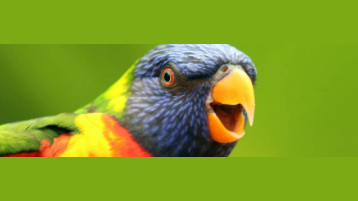
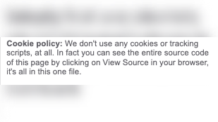

Make your Photo 16x9
Posted: Last updated:I sometimes like to make little utilies to make boring tasks easier. Often I don't really save much time on it since programming the utility takes as much time as performing the task dozens of times, but I enjoy programming 🙂.
One thing that has been annoying me for a while is the cropping of images on Twitter. I run the Twitter account for CardGames.io and I often post images of emails or messages from users that I think are funny. These are often very short and wide images, a couple of lines of text, and when I post them on Twitter they usually get cropped really badly, so you have to actually click on the image to be able to see what it says, you can't just read it in your timeline. (Twitter is experimenting with different cropping now, so maybe this is obsolete by the time you see this, but at least today, in my newly updated Twitter app it still shows like this).
It seems like a small thing, but even having to click an image to view it can make a lot fewer people actually look at your tweet. I had started to open these images in my graphics program, pad them to the right aspect ratio for Twitter, 16x9, and then posting them. This took a little time every time I did it, so I decided to make it "easier" for myself, and made a little single-serving site to do this:
It lets you drag and drop an image onto the page, and automatically pads the image to make it fit the 16x9 aspect ratio. The only question was, what should I fill the image out with? I ended up making a couple of possibilities.
The simplest ones are you can just fill it with solid black:
...or solid white:
You can fill it with transparency, although Twitter will put in some filler color if you do that:
You can use the "Detected color" option. That will look at all the pixels at the top and bottom of the image, choose the color that occurs most often, and fill the image with that color:

And finally, you can pad it with a blurred version of the image itself, similar to what is often done for vertical video when
it's being shown on TV. Unfortunately Safari doesn't support the .filter property on the Canvas, so I had to add a little
polyfill for that, I used Canvas Box Blur for that.
It also works for tall and narrow images:
The whole thing is contained in one single index.html file, you can see it at https://github.com/einaregilsson/photo16x9. There's no special purpose behind having it all in one file, I just like self-contained things 🙂. And I decided not to use any analytics, cookies or anything like that, because really what am I gonna use that information for?
Apparently Twitter is making some changes to it's cropping algorithm now, so maybe this will be obsolete tomorrow, but if you use the site and find it useful, let me know on Twitter, I'm @einaregilsson
Oh, and finally, here's the tweet that was at the start of the post with a padded image instead: